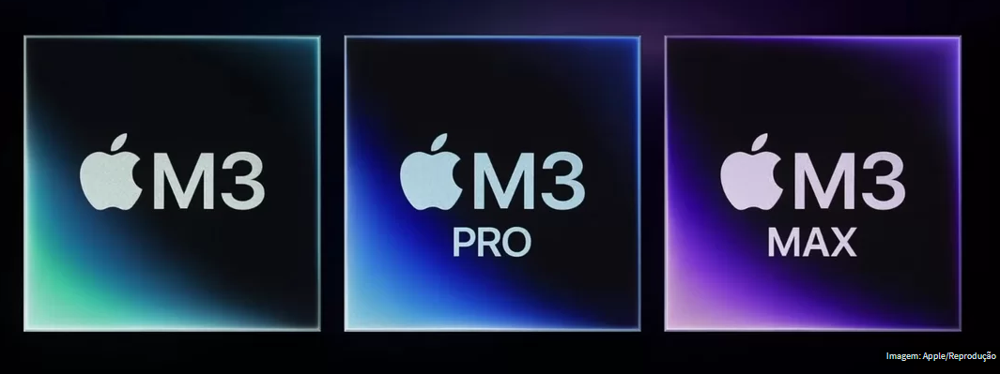
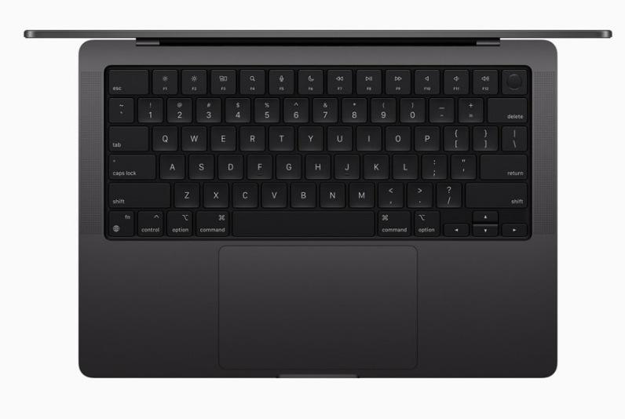

Apple anuncia chip M3 com grandes avanços em GPU e MacBook Pro
Publicado em 30/10/2023

Na noite do dia 30 de Outubro a Apple decidiu anunciar a sua nova linha de processadores A linha M3, terceira geração dos chips da empresa, possui até 92 bilhões de transistores e promete grandes avanços em CPU e GPU, send construída na litografia de 3 nanômetros. Acompanhando a nova geração, a empresa também revelou o novo MacBook Pro.
Essas são as principais características dos novos processadores:
| Processador | Núcleos CPU | Núcleos GPU | Memória unificada |
|---|---|---|---|
| Apple M3 | Até 8 | Até 10 | 24GB |
| Apple M3 Pro | Até 12 | Até 18 | 36GB |
| Apple M3 Max | Até 16 | Até 40 | 128GB |
Detalhes dos chips Apple M3

Nos novos modelos, a Apple diz que o Neural Engine é até 60% mais rápido em comparação com os chips da linha M1. Isso significa que os computadores atualizados poderão contar com mais agilidade em fluxos de trabalho baseados em machine learning (ML) e inteligência artificial (IA).
Os três modelos apresentados contam com aceleração de hardware com proposta de fazer com que os usuários possam assistir conteúdos de stramings e outros videos por mais tempo, mas gastando menos energia.
MacBook Pro

Já o novo MacBook Pro manteve o mesmo design do último modelo. A companhia afirmou que o novo notebook é mais rápido em aplicativos de edição de imagem, na comparação com o último dos seus modelos com o Core i7 e também com o M1 Pro. No Brasil, estes são os preços dos novos dispositivos:
MacBook Pro de 14": a partir de R$ 18.499 (M3) ou R$ 22.999 (M3 Pro)
MacBook Pro de 16": a partir de R$ 28.999 (M3 Pro) ou R$ 38.999 (M3 Max)